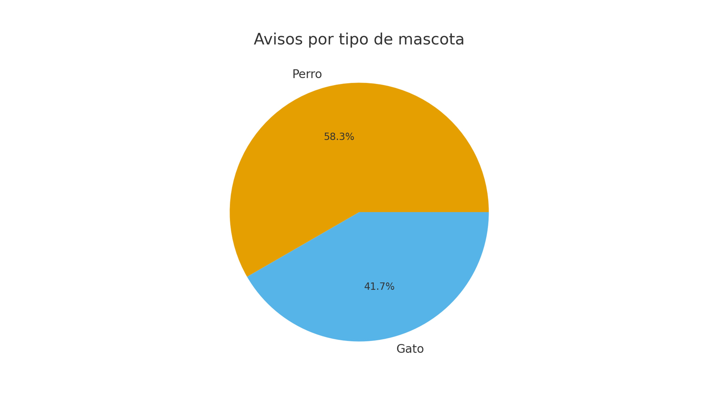
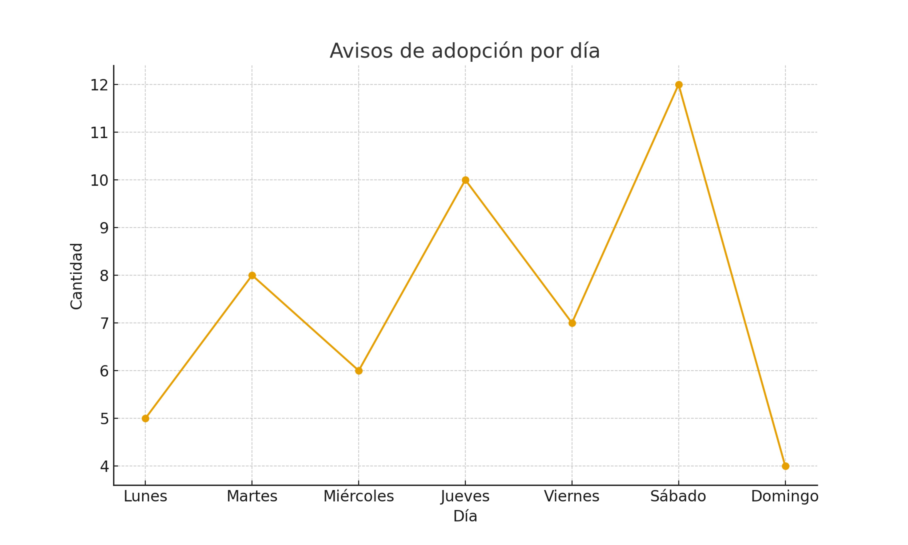
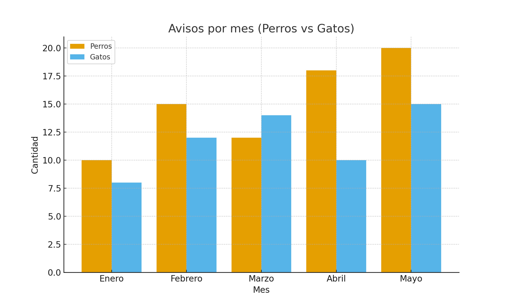

Estadísticas de Avisos de Adopcion
1. Cantidad de avisos por día (Grafico de líneas)

2. Total de avisos por tipo de mascota (Grafico de torta)

3. Avisos por mes y tipo de mascota (Grafico de barras)

⬅ Volver a la portada